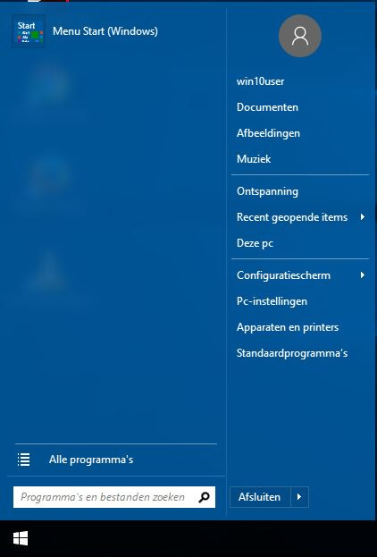

I trying to remove some stuff from the start menu win7 style also add some stuff too preferbly only with gpo.
What I want to remove is:
Music (Muziek)
Games (ontspanning)
Recent items (Recent geopende items)
Control Panel (configuratiescherm)
PC-Settings (Pc-instellingen)
Devices and Printers (apparaten en printers)
Standard Programs (standaard programma's)
What I want to add is:
The users download folder

The left empty space, can I use that for pinned programs? I would want shortcuts there to browsers, office applications and maybe some links to websites.
Thanks,
Btw I tried searching the forum for removing recent items, but if I enter that in the search field it tells me the words are to common

Btw2 this is windows 10 ltsb 2016